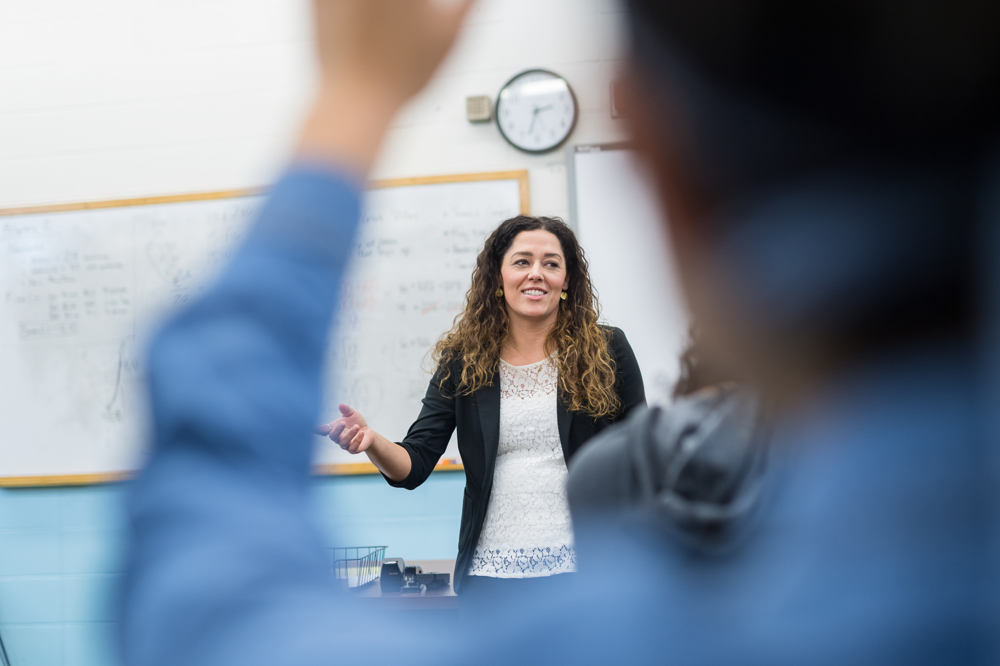

Welkom bij Curio Software Development
Hier kun je veel informatie vinden over onze opleiding!
Vind informatie over onze opleidingOver de Open Dag
Bij de Open Dag hebben we enorm veel dingen die wij graag willen laten zien. Op deze site kun je heel graag informatie terugvinden die u relevant zou vinden over de opleiding.

Vakanties
Wij hebben verschillende vakanties en vrije dagen tijdens het schooljaar. U kunt het vakantierooster voor dit jaar hier zien.
Herfstvakantie: 19 t/m 23 oktober 2026
Kerstvakantie: 21 december 2026 t/m 1 januari 2027
Voorjaarsvakantie: 8 t/m 12 februari 2027
Goede Vrijdag: 26 maart 2027
Tweede Paasdag: 29 maart 2027
Meivakantie: 26 april t/m 7 mei 2027 (Koningsdag 27 april - bevrijdingsdag en hemelvaart 5 en 6 mei)
Tweede Pinksterdag: 17 mei 2027
Zomervakantie: 26 juli t/m 3 september 2027

Voorbeeldrooster
Wilt u een voorbeeld van een rooster dat een eerste jaar zou kunnen hebben? Die kunt u hier vinden.

Informatie vakken
Bij de opleiding Software Developer hebben we meerdere vakken. Hieronder kunt u vinden wat elke vak eigenlijk inhoudt.
WEB
HTML, CSS, PHP... dit komt allemaal aan bod bij WEB. Je leert websites maken en verzorgt ervoor in de achterkant van een website dat alles veilig en goed werkt.
Burgerschap
Hier leer je dingen zoals de economie en politiek! Begrijp je rechten en plichten als burger en rol in de economie.
Nederlands
Hierbij leer je het goed toepassen van de Nederlandse taal. Je krijgt zowel het begrijpen van een tekst en het maken van een CV bijvoorbeeld.
Engels
Hierbij leer je het goed toepassen van de Engelse taal. Je leert bijvoorbeeld hoe je een presentatie in het Engels houdt en je leert hoe je een Engelse tekst goed begrijpt
Rekenen
Van statistiek tot verhoudingen, bij rekenen leer je vooral om problemen op te lossen met het gebruik van getallen en cijfers.
Challenges
In een paar weken vol met uitdagingen wordt de kennis toegepast die geleerd wordt en bijvoorbeeld WEB. Krijg echte praktische ervaring, werk samen met andere klasgenoten en laat mooi zien wat je kan!
Masterclass
Is er een onderwerp dat moeilijk is, of is er een actuele gebeurtenis waar we graag over willen lesgeven? Dat gebeurt hier. Mooi meegenomen als extra kennis dus!
Mentoruur
Hiermee wordt een les besteed met de mentor. Hier worden vooral praktische zaken en/of LOB behandeld.

Versnellen
Versnellen is zeker een mogelijkheid. Op deze manier kan iemand sneller de opleiding door via 3 jaar in plaats van 2 jaar. Dit kan niet zomaar. Docenten moeten aangeven dat iemandd de mogelijkheid heeft om te versnellen.

Huiswerk
Huiswerk zit redelijk simpel in elkaar. Elke week krijg je één opdracht of meedere opdrachten die voor Zondag 23:59 af moeten zijn. Er kunnen uitzonderingen zijn. Meestal is er tijd om in de les zelf huiswerk te maken, waardoor het aantal werk thuis dat gedaan moet worden redelijk laag is.

Samen werken met elkaar
Tijdens challenges is het van belang dat er samengewerkt wordt met klasgenoten. In de praktijk wordt ook enorm veel in teams gewerkt. Er worden allemaal technieken aan studenten geleerd om ervoor te zorgen dat dat samenwerken ook goed gaat.
Zak/slaag regeling generieke vakken
Bij de generieke vakken, Nederlands, Engels en Rekenen slaagt iemand pas als alle examens voldoende zijn. Ten minste een 5.5. Als iemand al geslaagd is voor de generieke vakken, hoeven ze voor deze lessen niet meer aanwezig te zijn als ze het hebben gehaald bij een vorige opleiding.
